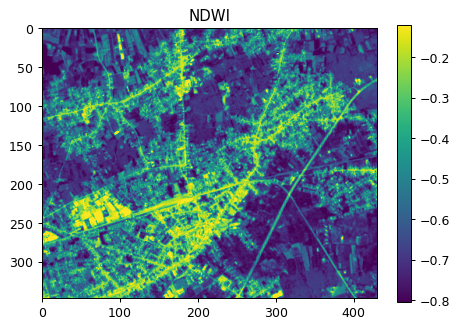

import json
import openeo
from openeo.api.process import ParameterUser-Defined Processes (UDP) in openEO
openEO allows processes to be chained together in a process graph to build a particular algorithm. Often, users have specific (sub)graphs that reoccur in the same process graph or even in different process graphs or algorithms. openEO back-ends allows you to store such subgraphs as so-called “User-Defined Process” (often abbreviated as UDP), and build your library of reusable openEO building blocks.
This notebook provides a step-by-step guide on how to create and use a User-Defined Process, for with a Normalized Difference Water Index (NDWI) use case.
Set up
Import a couple of packages and establish an authenticated connection
connection = openeo.connect(url="openeo.dataspace.copernicus.eu")
connection.authenticate_oidc()Authenticated using refresh token.<Connection to 'https://openeo.dataspace.copernicus.eu/openeo/1.1/' with OidcBearerAuth>Building a parameterized datacube
The openEO Python client lets you define parameters as Parameter instances (from openeo.api.process subpackage). In general you have to specify at least the parameter name, a description and a schema.
temporal_extent_param = Parameter(
name="date_range",
description="The date range to load.",
schema={"type": "array", "subtype": "temporal-interval"},
)
spatial_extent_param = Parameter(
name="bbox",
description="The bounding box to load.",
schema={"type": "object", "subtype": "geojson"},
)Use the parameters directly as arguments to load_collection to build in initial data cube with SENTINEL2_L2A data.
band = ["B03", "B08"]
cube = connection.load_collection(
"SENTINEL2_L2A",
temporal_extent=temporal_extent_param,
spatial_extent=spatial_extent_param,
bands=band,
max_cloud_cover=80,
)The NDWI is a vegetation index sensitive to the water content of vegetation and is complementary to the NDVI. High NDWI values show a high water content of the vegetation. \[ \mathrm{NDWI} = \frac{\mathrm{Green} - \mathrm{NIR}}{\mathrm{Green} + \mathrm{NIR}} \]
green = cube.band("B03")
nir = cube.band("B08")
ndwi = (green - nir) / (green + nir)
ndwiNow, let’s produce a temporal aggregation by taking the temporal maximum value.
ndwi = ndwi.max_time()Store as User-Defined Process (UDP)
We can now store this parametarized data cube representation as a user-defined process called NDWI on the back-end.
connection.save_user_defined_process(
user_defined_process_id="NDWI",
process_graph=ndwi,
parameters=[temporal_extent_param, spatial_extent_param],
)Use the UDP
Now, let’s evaluate our freshly created user-defined processes “NDWI”. We can using datacube_from_process() to create a DataCube from this process and only have to provide concrete temporal and spatial extents:
ndwi2022 = connection.datacube_from_process(
process_id="NDWI",
date_range=["2022-07-19", "2022-07-19"],
bbox={"west": 5.09, "south": 51.18, "east": 5.15, "north": 51.21},
)ndwi2022.download("ndwi2022.tiff")Visualize the result
import rasterio
import matplotlib.pyplot as plt
import numpy as np
data = rasterio.open("ndwi2022.tiff").read()
fig, ax = plt.subplots(figsize=(6, 4), dpi=90)
img = ax.imshow(data[0], vmin=np.percentile(data, 1), vmax=np.percentile(data, 99))
ax.set_title("NDWI")
plt.colorbar(img)